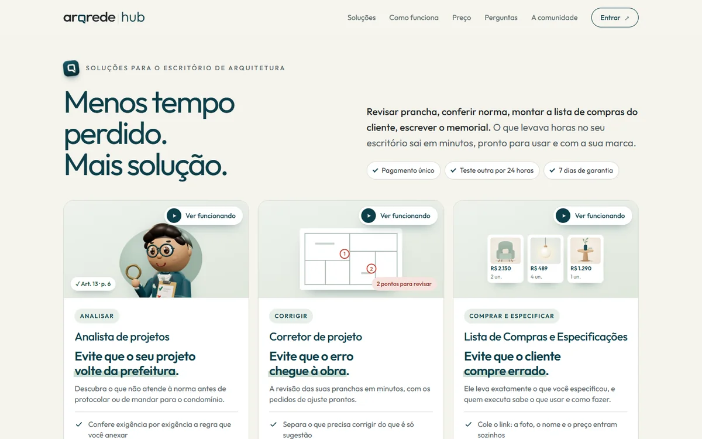

In production
ArqRede Hub
Architecture firms lose hours reviewing drawing sheets, checking codes and building shopping lists, and errors tend to surface only on site.
I built the ArqRede community platform, from the sales site to the logged-in area: Project Analyst, Drawing Corrector and Shopping List, with login, payments, coupons and a sales dashboard. I also wrote a reader that measures dimensions straight from the PDF drawing, without relying on AI.

01 / tech sheetlive
Stack
- JavaScript
- Vercel
- Redis
- pdf.js
- Gemini
- Claude API
- InfinitePay
Result or current status
Live with real sales, as a one-time payment, alongside the ArqRede community site.